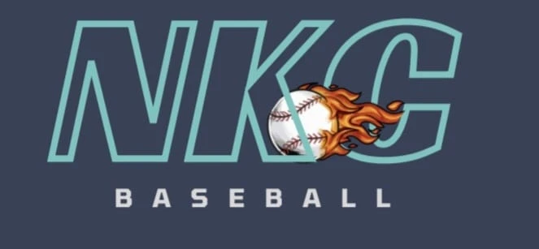

NKC Score
Estatísticas e súmula de beisebol, funcionando sem internet
Painel de estatísticas
Beisebol Infantil 2026 · rebatida, arremesso, defesa e spray chart por campeonato, clube, equipe e atleta
›
Marcar jogos
Súmula arremesso a arremesso, elenco, números e exportação para Excel, CSV e backup
›